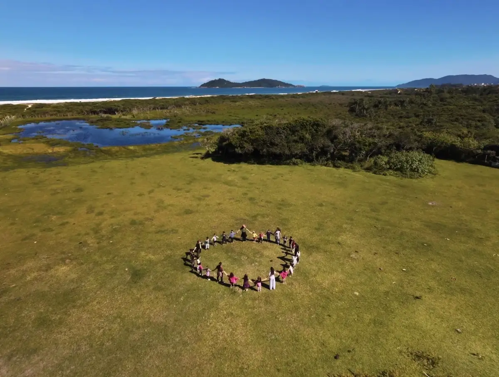
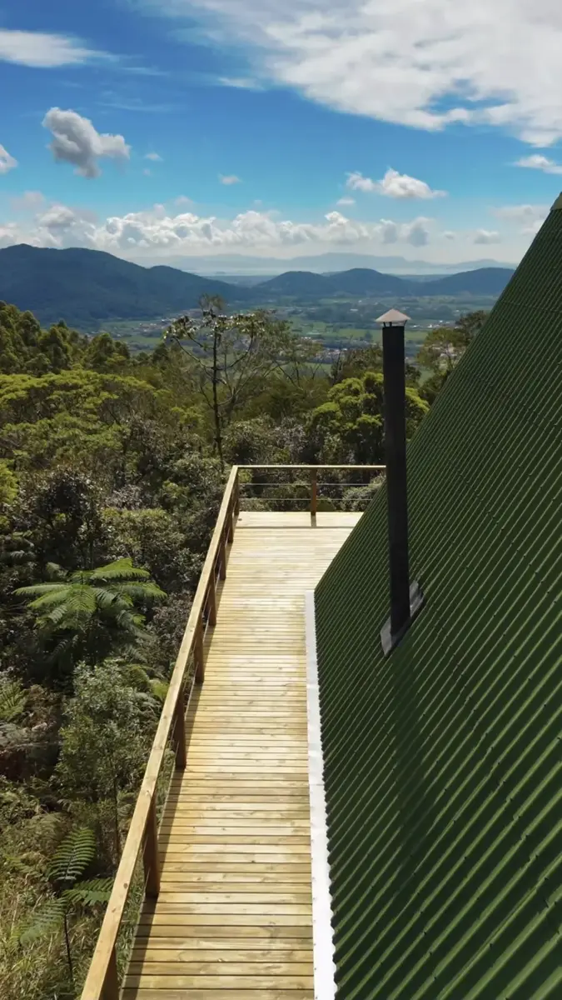
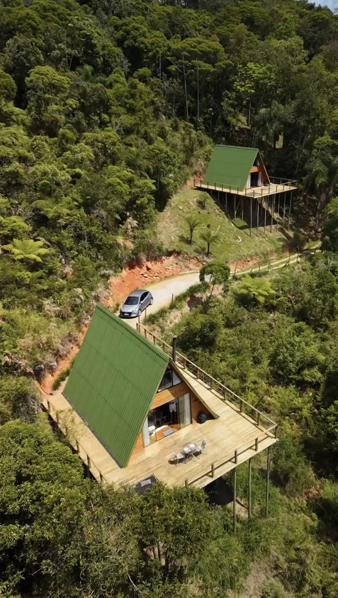
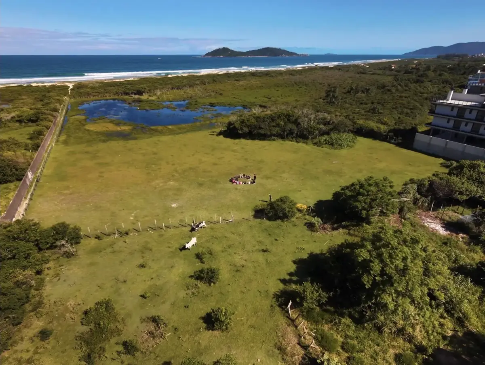
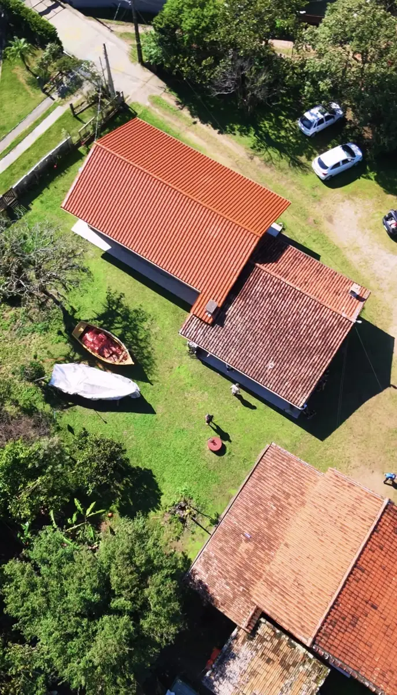
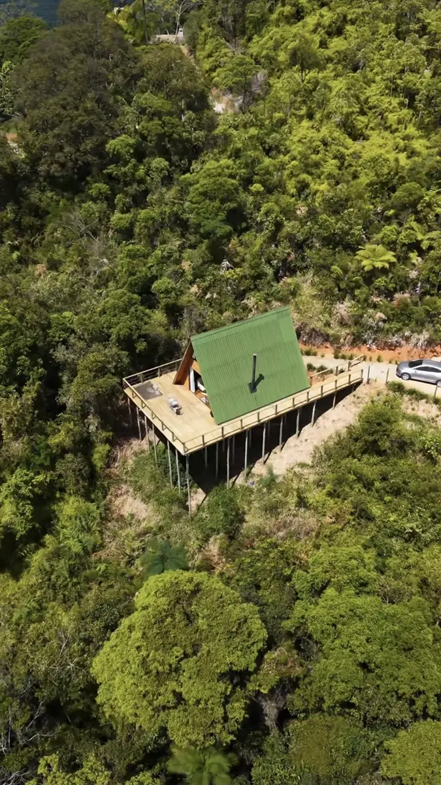
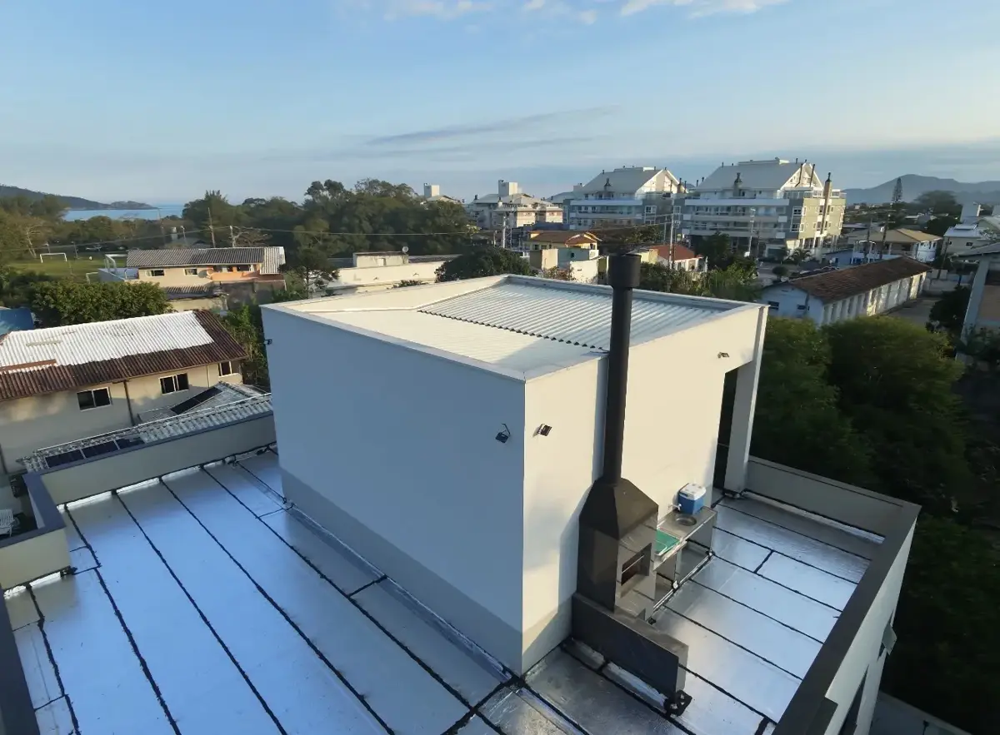
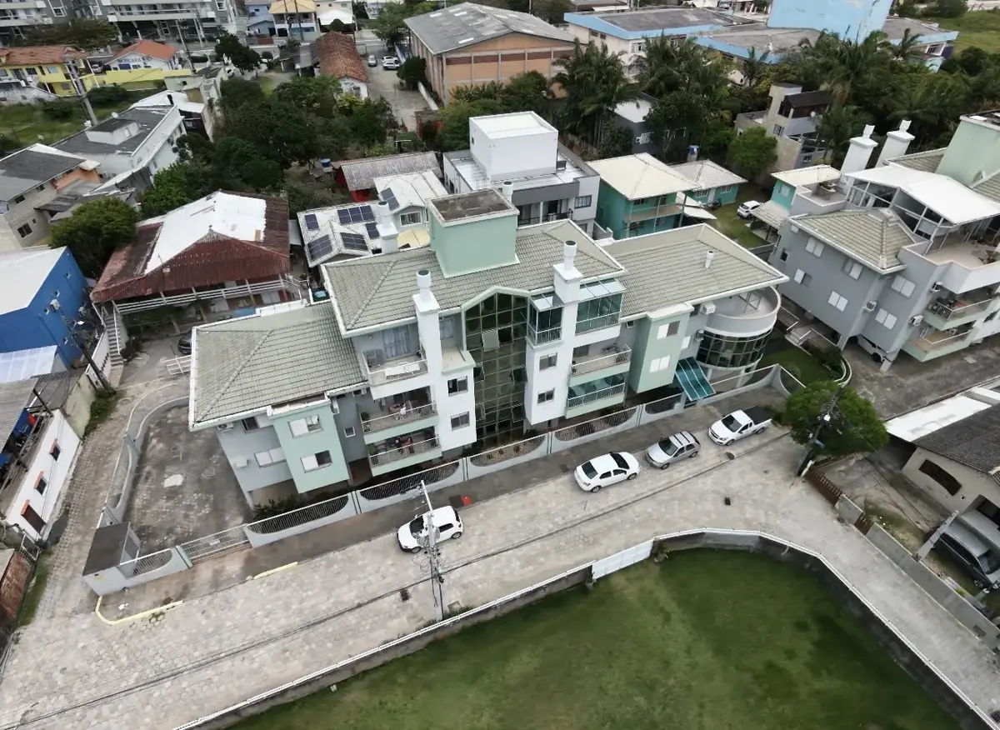
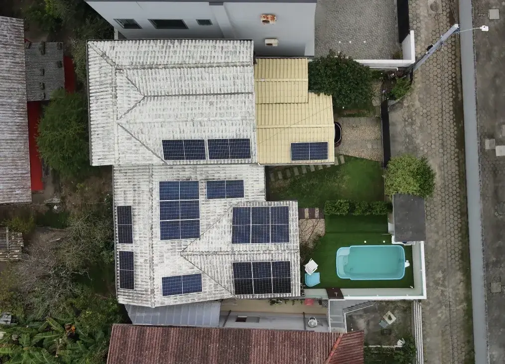

Florianópolis · SC
Fotografias, vídeos e inspeções técnicas com drone em Florianópolis.
Uma nova perspectiva para o seu imóvel.
Solicite seu orçamento
Serviços
O que fazemos
- 01Fotografias & vídeos aéreos
- 02Imagens que valorizam o seu imóvel
- 03Inspeção de telhados
- 04Eventos

Portfólio
Trabalhos recentes






